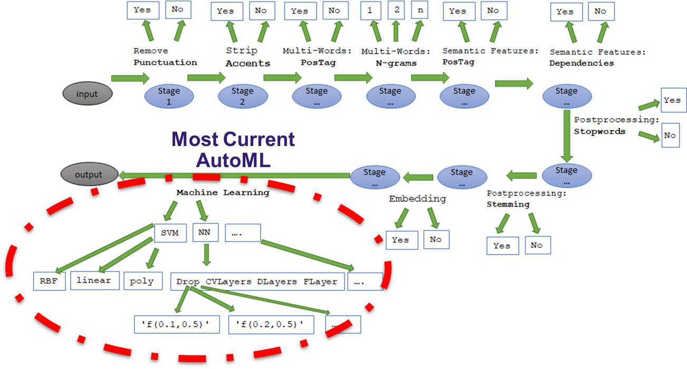

T5.1. AutoGOAL
Contents
T5.1. AutoGOAL#
Contenidos:
Introducción#
Las propuestas de Auto-ML actuales requieren de una previa definición de los algoritmos que serán considerados durante el proceso de búsqueda. Sistemas con un diseño extensible logran separar la lógica y el conjunto de técnicas, haciendo al segundo fácilmente modificable. Sin embargo, no muchos logran cumplir este objetivo, requiriendo cambios computacionales pertinentes a la hora de añadir enfoques de machine learning a ser considerados.
Gran parte de los sistemas que forman el estado del arte, interpretan el problema del Auto-ML como un problema de selección combinada de modelos y optimización de hiperparámetros. Este enfoque captura naturalmente el área del aprendizaje supervisado y, a la vez, impide resolver directamente tareas de otros campos del ML como el aprendizaje no supervisado.
El Auto-ML heterogéneo es una nueva variante del Auto-ML general que consiste en la creación de flujos de machine learning más complejos y con estructuras dependientes de la tarea. Abarcando áreas como el aprendizaje supervisado y no supervisado de manera natural, el problema heterogéneo requiere la creación de sistemas más flexibles y generales.
¿Qué tipo de AutoML es AutoGOAL?#
AutoGOAL es un sistema diseñado específicamente para Problemas de AutoML heterogéneo.
¿Por qué utilizarlo?#
Permite a los investigadores y profesionales desarrollar rápidamente algoritmos de referencia optimizados en diversos problemas de aprendizaje automático.
Instalación de la librería AutoGOAL, versión 0.4.4
!pip install autogoal[contrib]==0.4.4
Uso de AutoGOAL desde la clase AutoML:
>>> from autogoal.datasets import cars
>>> from autogoal.ml import AutoML
>>> from sklearn.preprocessing import LabelEncoder
>>> encoder = LabelEncoder()
>>> X, y,*_ = cars.load()
>>> y = encoder.fit_transform(y)
>>> automl = AutoML()
>>> automl.fit(X, y)
# Report the best pipeline
>>> print(automl.best_pipeline_)
>>> print('score: ' + str(automl.best_score_))
Figura 1. Ejemplo simple de uso de AutoGOAL
Para ver demostrador hacer click en el enlace.
Sin embargo, los sistemas AutoML no deben intentar reemplazar a los expertos humanos, sino servir como herramientas complementarias que permitan a los investigadores obtener rápidamente mejores prototipos y conocimientos sobre las estrategias más prometedoras en un problema concreto. Las técnicas de AutoML abren las puertas a revolucionar la forma en que se realiza la investigación y el desarrollo del aprendizaje automático en la academia y la industria.
¿Qué diferencia a AutoGOAL del resto de bibliotecas?#
A diferencia de los enfoques de AutoML existentes, AutoGOAL puede combinar técnicas y algoritmos de diferentes bibliotecas y tecnologı́as, incluidos algoritmos de aprendizaje de máquina clásicos, extracción de caracterı́sticas, herramientas de procesamiento de lenguaje natural y diversas arquitecturas de redes neuronales.
{kind=link}
Figura 2. Donde se centra generalmente el autoML
¿Qué es AutoGOAL?#
AutoGOAL es un marco de Python para la optimización automática, generación y aprendizaje de pipelines(flujos o tuberías) de software.
Una pipeline se define, a los efectos de AutoGOAL, como cualquier componente de software, ya sea una jerarquía de clases, un conjunto de funciones o cualquier combinación de los mismos, que trabajan juntos para resolver un problema específico.
Con AutoGOAL puede definir un pipeline de muchas formas diferentes, de modo que ciertas partes de ella sean configurables o sintonizables, y luego usar algoritmos de búsqueda para encontrar la mejor manera de ajustarla o configurarla para un problema dado.
{kind=link}
Figura 3. Visión general de Autogoal
{kind=link}
Figura 4. Gramática probabilística
Funciones#
Optimización de caja negra: un optimizador de caja negra que se puede aplicar a cualquier función.
Pipelines predefinidos: pre-empaquetados con pipelines basados en marcos de aprendizaje automático populares, que puede usar en pocas líneas de código para crear canales de aprendizaje automático altamente optimizados para una amplia gama de problemas.
Flujos basados en clases: la API basada en clases le permite convertir cualquier jerarquía de clases en un espacio optimizable. Usted define clases y anota los parámetros del constructor con atributos, y AutoGOAL construye automáticamente una gramática que genera todas las instancias posibles de su jerarquía.
Canalizaciones basadas en grafos: la API basada en grafos le permite explorar espacios definidos como grafos. La gramática de un grafo se define como un conjunto de reglas de reescritura de grafos, que toman nodos existentes y los reemplazan por patrones más complejos. AutoGOAL luego se transforma en un objeto evaluable, por ejemplo, una red neuronal.
Pipelines funcionales: la API funcional le permite gemerar código de Python que resuelva alguna tarea en un pipeline optimizable. Escribe un método regular e introduce los parámetros de AutoGOAL en el flujo de código, que luego se optimizarán automáticamente para producir la salida óptima.
Temas que podemos tratar con AutoGOAL#
Tema 1. AutoGOAL para la resolución de problemas de alto nivel (uso de la clase AutoML)#
¿Como definimos un problema con AutoGOAL?
Es necesario definir:
Entrada,
Salida, y
Métrica a optimizar (Función objetivo)
Véase el siguiente ejemplo:
>>> from autogoal.ml import AutoML
>>> from autogoal. datasets import haha
>>> from autogoal.kb import Seq , Sentence , VectorCategorical, Supervised
>>> from sklearn.metrics import balanced_accuracy_score
>>> automl = AutoML(
>>> input=(Seq[Sentence], Supervised[VectorCategorical]), # tipos de entrada: seleccionar el tipo de dato semántico
>>> output=VectorCategorical, # tipo de salida: seleccionar el tipo de dato semántico
>>> score_metric=balanced_accuracy_score # métrica a optimizar (Función objetivo): Seleccionar la métrica objetivo
>>> )
>>> X, y,*_ = haha.load()
>>> automl.fit(X, y) # ejecutar optimizacion
# Report the best pipeline
>>> print(automl.best_pipeline_)
>>> print(automl.best_score_)
Figura 5. Ejemplo de código fuente para ejecutar AutoGOAL en un conjunto de datos específico, en este caso, un problema de PLN.
Podemos considerando más parámetros:
>>> from autogoal.kb import *
>>> from autogoal.ml import AutoML
>>> from autogoal.datasets import haha
>>> from autogoal.search import PESearch
>>> from sklearn.metrics import balanced_accuracy_score
>>> import argparse
>>> parser = argparse.ArgumentParser()
>>> parser.add_argument('-f')
>>> parser.add_argument("--iterations", type=int, default=100)
>>> parser.add_argument("--timeout", type=int, default=1800)
>>> parser.add_argument("--memory", type=int, default=20)
>>> parser.add_argument("--popsize", type=int, default=50)
>>> parser.add_argument("--selection", type=int, default=10)
>>> parser.add_argument("--global-timeout", type=int, default=None)
>>> parser.add_argument("--examples", type=int, default=None)
>>> parser.add_argument("--token", default=None)
>>> parser.add_argument("--channel", default=None)
>>> args = parser.parse_args()
>>> print('Done')
>>> automl = AutoML(
>>> input = (Seq[Sentence], Supervised[VectorCategorical]),
>>> output = VectorCategorical,
>>> score_metric=balanced_accuracy_score, #función objetivo
>>> registry=None,
>>> search_algorithm=PESearch,
>>> search_iterations=args.iterations,
>>>
>>> pop_size=args.popsize,
>>> search_timeout=args.global_timeout,
>>> evaluation_timeout=args.timeout,
>>> memory_limit=args.memory * 1024 ** 3,
>>>
>>> include_filter=".*",
>>> exclude_filter=None,
>>> validation_split=0.3,
>>> cross_validation="median",
>>> cross_validation_steps=3,
>>> random_state=None,
>>> metalearning_log=False,
>>> errors="warn",
>>> )
>>> automl.fit(X, y)
# Report the best pipeline
>>> print(automl.best_pipeline_)
>>> print(automl.best_score_)
Figura 6. Ejemplo de código fuente con más parámetros.
Tipos de datos semánticos en AutoGOAL#
Los tipos de datos semánticos permiten identificar la compatibilidad entre la entrada y salida de los distintos algoritmos pertenecientes a los Pipelines. De este modo es posible, a través de los algoritmos transformar un dato en otro y conseguir que el flujo del Pipeline no se interrumpa. Se aplican además jerarquías de conceptos los cuales proporcionan interfaces comunes para los distintos tipos de datos.

Figura 7. Datos semánticos
Problema de ejemplo clásicos con distintos tipos de datos (texto, imágenes, clasificación básica)
Definición de pipeline según AutoGOAL#
¿Cómo saber cuando dos algoritmos son conectables?#
Se considera que dos algoritmos son conectables cuando el tipo de la salida del primero y la entrada del segundo son el mismo o el primero es subtipo del segundo.
Realmente es un poco más amplio dado que los algortimos pueden recibir más de un tipo, además pueden irse acumulando varios tipos distintos para un punto determinado en un Pipeline. En este caso se puede conectar al pipeline que estamos construyendo un algoritmo si este recibe un subconjunto de los tipos que ha acumulado el pipeline.
Proceso de construcción del grafo de algoritmos#
La siguiente imagen muestra una explicación de alto nivel del proceso de construcción del grafo de algoritmos y cómo se generan las muestras de algoritmos.
{kind=link}
Figura 8. Proceso de muestreo y optimización de Pipelines.
{kind=link}
Figura 8.1. Grafo de muestreo y optimización de Pipelines.
Tema 2. Beneficios de la arquitectura de AutoGOAL#
AutoGOAL defiende una arquitectura dividida por capas y módulos. Cada capa se encarga de la agrupación de distintos tipos de módulos responsables de los siguentes aspectos:
registro de recursos y bibliotecas
adaptación de algortimos a la plataforma AutoGOAL
gestión de flujos de procesos pipelines, gestión de gramáticas y la optimización de pipelines
definición conceptual de clases y tipos semánticos que se utilizan en los procesos de automatización

Figura 9. Arquitectura de AutoGOAL.
Módulos de AutoGOAL#
Módulo de Gramática#
Proporciona un conjunto de anotaciones de tipo que se utilizan para definir el espacio de hiperparámetros de una técnica o algoritmo arbitrario.
Cada técnica se representa como una clase de Python, y los hiperparámetros correspondientes se representan como argumentos anotados del método __init__, ya sea valores primitivos (por ejemplo, numéricos, texto, etc.) o instancias de otras clases, anotadas recursivamente.
Dada una colección de clases anotadas, este módulo infiere automáticamente una gramática libre de contexto que describe el espacio de todas las instancias posibles de esas clases.
¿Qué es una gramática en AutoGOAL?#
Una gramatica (Gramática libre de contexto(GLC)) en general es un mecanismo formal para describir una estructura jerárquica a partir de reglas que definen como se generan subestructuras. Esto sería una gramática libre del contexto. La estructura se define recursivamente partiendo de un concepto raíz (en este caso Pipeline) que se compone recursivamente de la concatenación de otros conceptos, que a su vez pueden estar compuestos por más conceptos. Cuando un concepto no se define en función de otros se considera un Terminal de la gramática y de lo contrario un concepto No Terminal.
!Lo más interesante de las gramáticas es que nos permiten representar espacios infinitos de forma finita! Se representan de la siguiente forma:
Oración: Sujeto Predicado | Predicado
Sujeto: Articulo Sustantivo | Sustantivo | Sustantivo Adjetivo
Predicado: Verbo Complementos
artículos: el | la | los | las …
…….
Figura 10. Ejemplo de gramática de una oración
normalmente los No Terminales se representan con mayúsculas y los Terminales con minúsculas
>>> from autogoal.grammar import generate_cfg
>>> from autogoal.grammar import DiscreteValue, ContinuousValue
>>> class MyClass:
def __init__(self, x: DiscreteValue(1,3), y: ContinuousValue(0,1)):
pass
>>> grammar = generate_cfg(MyClass)
>>> print(grammar)
<MyClass> := MyClass (x=<MyClass_x>, y=<MyClass_y>)
<MyClass_x> := discrete (min=1, max=3)
<MyClass_y> := continuous (min=0, max=1)
Figura 11. Ejemplo de gramática a partir de una clase. Tomado de AutoGOAL.
...
>>> class Pipeline(SkPipeline):
>>> def __init__(
>>> self,
>>> vectorizer: Union("Vectorizer", Count, TfIdf),
>>> decomposer: Union("Decomposer", NoDec, SVD),
>>> classifier: Union("Classifier", LR, SVM, DT),
>>> ):
>>> self.vectorizer = vectorizer
>>> self.decomposer = decomposer
>>> self.classifier = classifier
>>> super().__init__(
>>> [("vect", vectorizer), ("decomp", decomposer), ("class", classifier),]
>>> )
...
>>> grammar = generate_cfg(Pipeline)
>>> print(grammar)
<Pipeline> := Pipeline (vectorizer=<Vectorizer>, decomposer=<Decomposer>, classifier=<Classifier>)
<Vectorizer> := <Count> | <TfIdf>
<Count> := Count (ngram=<Count_ngram>)
<Count_ngram> := discrete (min=1, max=3)
<TfIdf> := TfIdf (ngram=<TfIdf_ngram>, use_idf=<TfIdf_use_idf>)
<TfIdf_ngram> := discrete (min=1, max=3)
<TfIdf_use_idf> := boolean ()
<Decomposer> := <NoDec> | <SVD>
<NoDec> := NoDec ()
<SVD> := SVD (n=<SVD_n>)
<SVD_n> := discrete (min=50, max=200)
<Classifier> := <LR> | <SVM> | <DT>
<LR> := LR (penalty=<LR_penalty>, reg=<LR_reg>)
<LR_penalty> := categorical (options=['l1', 'l2'])
<LR_reg> := continuous (min=0.1, max=10)
<SVM> := SVM (kernel=<SVM_kernel>, reg=<SVM_reg>)
<SVM_kernel> := categorical (options=['rbf', 'linear', 'poly'])
<SVM_reg> := continuous (min=0.1, max=10)
<DT> := DT (criterion=<DT_criterion>)
<DT_criterion> := categorical (options=['gini', 'entropy'])
Figura 12. Ejemplo de gramática a partir de un pipeline de clasificación
Módulo de Optimización#
Proporciona estrategias de muestreo sobre una gramática libre del contexto que construye recursivamente una instancia especı́fica basada en las anotaciones. Se implementan dos estrategias de optimización:
Esta última, PESearch, realiza un ciclo de muestreo/actualización que selecciona las instancias de mejor rendimiento de acuerdo con alguna métrica predefinida (p.e., precisión) y actualiza iterativamente el modelo probabilístico interno del algoritmo de muestreo. Ver ejemplo de las figuras 3 y 4.
En el siguiente enlace encontraremos la documentación correspondiente: Ver más…
Módulo de Flujos (Pipelines)#
Proporciona una abstracción para que los algoritmos se comuniquen entre sı́ a través de un patrón Facade, es decir, la implementación de un método run con anotaciones para los tipos de entrada y salida. Las clases(que representan algiritmos) que implementan este patrón se conectan automáticamente en un grafo de algoritmos, donde cada ruta representa un posible Pipeline para resolver un problema, especificado por los tipos de datos de entrada y salida. La Figura 1 ejemplifica distintas alternativas (Pipelines) probables para enfrentar un problema determinado.
¿Cómo añadir un algoritmo nuevo a AutoGOAL y utilizarlo?#
Parte 1:
Definir una clase
Anotar los hiperparámetros en el constructor
Implementar el método
run
Parte 2:
Pasar a la clase AutoML una lista personalizada de algoritmos. Ver Figura 14 variable
registry.
Parte 1#
Un algoritmo en AutoGOAL es una clase que se define con un tipo de entrada y salida, y contiene un método run. Veamos el siguiente ejemplo:
from autogoal.kb import Document, Word, AlgorithmBase
@nice_repr
class WikipediaSummaryExample(AlgorithmBase):
"""This class find a word in Wikipedia and return a summary in english.
"""
def __init__(self):
pass
def run(self, input: Word)-> Document:
"""This method use wikipedia.
"""
try:
return wikipedia.summary(input)
except:
return ""
Figura 13. Ejemplo de definición de un nuevo algoritmo para extraer el resumen de un ariculo de Wikipedia.
Parte 2#
Utilizar la clase AutoML para integrar los nuevos algoritmos
from autogoal.ml import AutoML
from sklearn.metrics import balanced_accuracy_score
from autogoal.kb import Seq, Sentence, VectorCategorical, Discrete, Supervised
from autogoal.contrib import find_classes
from autogoal.datasets import haha
clases = find_classes()
clases.extend([WikipediaSummaryExample]) #añadir algoritmo al registro de algoritmos
automl = AutoML (
input= (Seq[Sentence], Supervised[VectorCategorical]), #entrada
output = VectorCategorical, #salida
score_metric=balanced_accuracy_score, #métrica a optimizar (Función objetivo)
registry=clases# añadimos a todas los algoritmos registrados. No es necesario añadir el nuevo si este se crea dentro del módulo ````contrib```` el nuevo algoritmo siempre y cuando este no.
)
X, y, *_ = haha.load() #cargar datos del dominio especifico
automl.fit(X, y) # ejecutar optimizacion
# Report the best pipeline
print(automl.best_pipeline_)
print(automl.best_score_)
Figura 14. Incorporación del nuevo algoritmo en el proceso de AutoML
En cada implementación de un algoritmo (ahora una clase) se define un contructor con argumentos semánticamente anotados que describen los posibles rangos de valores de sus hiperparámetros. Los argumentos pueden ser valores:
discretos,
continuos,
categóricos,
booleanos,
instancias de alguna otra clase.
Cada argumento provee los rangos válidos para el hiperparámetro correspondiente. Por ejemplo, anotaciones discretas y continuas definen valores máximos y mı́nimos, mientras que las categóricas presentan una lista de posibles valores. En el caso de los hiperparámetros que son instancias de otros algoritmos, AutoGOAL es capaz de encontrar el conjunto de clases válidas por los que pueden ser reemplazados.
¿Cómo integrar otras librerías?: Ejemplo Sklearn#
class LR(sklearn.linear_model.LogisticRegression):
def __init__(self, penalty:Categorical("l1", "l2"), C:Continuous (0.1, 10)):
super().__init__(penalty = penalty, C=C)
def run(self, input: MatrixContinuous, VectorCategorical) -> VectorCategorical
if self.training:
X, y = input
self.fit(X, y)
return y
else:
return self.predict(X)
Figura 15. Ejemplo de definición de adaptador para el algoritmo LogisticRegression de scikitlearn.
En el siguiente enlace encontraremos documentación de ejemplo donde se integra la librería Sklearn en AutoGOAL:
Tema 3. Uso de componentes#
Definición de espacio de búsqueda en AutoGOAL#
Un espacio de búsqueda es el conjunto de todos los posibles Pipelines para resolver un problema. Son todas las posibilidades entre las que se quiere elegir y sus combinaciones. Se representa utilizando una gramática, donde el nodo inicial es Pipeline. En implementación esta gramática se puede inferir de la jerarquía de clases que se diseñe, pasando la clase que represente el concepto raíz de la gramática y se cumpla que los tipos de datos estén anotados.
Pasos para utilizar AutoGOAL:
Definición de espacio de búsqueda#
Para definir un espacio de búsqueda propio hay que definir clases con sus parámetros del constructor anotados, similar a lo que se hace en la sección anterior. Lo que NO es necesario es el método run porque al ser definido por el usuario NO necesita que cumplir con la interfaz de AutoML.
En el ejemplo de la Figura 13 se puede ver un ejemplo donde se define una clase y el espacio que la búsqueda de algortimos esta representa.
En resumen, si requerimos el uso de la clase AutoML, ver descripción en esta Sección, para que se realice el muestreo y optimización de modo transparente necesitamos que las clases que representan algoritmos tengan implentado el método run. En el caso de que NO se desee utilizar la clase AutoML, ver descripción en Figura 18, para este fin, NO es necesario que estas clases tengan implementado en método run.
Espacio de búsqueda construyendo Pipelines#
En la siguiente imagen podemos ver cómo podemos muestrear estos espacios de búsqueda de Pipelines con autogoal.grammar desde un input Vectorizer hasta un output Classifier pasando por todos aquellos algortimos registrados en el pipeline.
...
from autogoal.grammar import Union
from autogoal.grammar import generate_cfg
from sklearn.pipeline import Pipeline as _Pipeline
class Pipeline(_Pipeline): # creación de un Pipeline
def __init__(
self,
vectorizer: Union("Vectorizer", Count, TfIdf),
decomposer: Union("Decomposer", Noop, SVD),
classifier: Union("Classifier", LR, SVM, DT, NB),
):
self.vectorizer = vectorizer
self.decomposer = decomposer
self.classifier = classifier
super().__init__(
[
("vec", vectorizer),
("dec", decomposer),
("cls", classifier),
]
)
grammar = generate_cfg(Pipeline)
print(grammar) #imprime la gramatica general del algoritmo
## generar pipelines
for _ in range(10):
print(grammar.sample()) #imprime cada posible pipeline generado en 10 iteraciones
Pipeline(classifier=DT(criterion='entropy'), decomposer=SVD(n=171),
vectorizer=Count(ngram=1))
Pipeline(classifier=NB(var_smoothing=0.040787398985797634), decomposer=Noop(),
vectorizer=TfIdf(ngram=1, use_idf=False))
Pipeline(classifier=DT(criterion='entropy'), decomposer=Noop(),
vectorizer=TfIdf(ngram=2, use_idf=True))
Pipeline(classifier=NB(var_smoothing=0.04191083544753372), decomposer=SVD(n=85),
vectorizer=Count(ngram=3))
Pipeline(classifier=LR(C=4.0925502319539, penalty='l1'), decomposer=SVD(n=195),
vectorizer=TfIdf(ngram=1, use_idf=False))
Pipeline(classifier=LR(C=8.152718968487418, penalty='l1'), decomposer=Noop(),
vectorizer=Count(ngram=3))
Pipeline(classifier=LR(C=6.571248367039737, penalty='l1'), decomposer=SVD(n=67),
vectorizer=TfIdf(ngram=3, use_idf=False))
Pipeline(classifier=DT(criterion='entropy'), decomposer=SVD(n=112),
vectorizer=TfIdf(ngram=2, use_idf=True))
Pipeline(classifier=LR(C=4.475181588819262, penalty='l1'),
decomposer=SVD(n=176), vectorizer=Count(ngram=1))
Pipeline(classifier=SVM(C=3.555271538951682, kernel='rbf'),
decomposer=SVD(n=148), vectorizer=Count(ngram=2))
Figura 16. Definición de espacio de búsqueda al generar muestreos de Pipelines.
Función de evaluación#
Otro requisito es contar con una función que evalúe cada Pipeline. Esta sería la función objetivo que se desea optimizar. Lo importante es esta función reciba un Pipeline y le asigna un número que sirve para comparar diferentes pipelines.
¡!!Lo que hace AutoML es ejecutar el Pipeline en un dataset y medir error de predicción)!!! Ver ejemplo
Generar gramática#
Una vez que se tiene el Espacio de Búsqueda y la Función Objetivo se genera la gramática utilizando el método generate_cfg, que está en autogoal.grammar.
Instanciación de SearchAlgorithm#
Luego se instancia alguna clase que herede de la clase SearchAlgorithm y se le envía a la Gramática, la Función Objetivo y restricciones de tiempo y memorias. La documentación al respecto la podéis encontrar en el siguiente enlace: https://autogoal.github.io/examples/tests.examples.comparing_search_strategies/
Ejecutar Funciones#
De esta forma se puede utilizar AutoGOAL para resolver problemas que no sean propios de ML. Una aplicación de esta forma uso es seleccionar el mejor ensemble dado un conjunto de algoritmos, donde el concepto de mejor se define en la función Objetivo. La documentación al respecto la podéis encontrar en el siguiente enlace: https://autogoal.github.io/examples/tests.examples.comparing_search_strategies/
Ejemplo extendido de optimización con AutoGOAL (SIN uso de la clase AutoML)#
En esta sección veremos ejemplos que evolucionan, desde resolver una problema con un único algoritmo, luego pasar a componer varios algoritmos hasta muestrear diferentes Pipelines.
👇👇👇👇👇👇👇👇👇👇👇👇👇👇
from sklearn.datasets import make_classification
from sklearn.model_selection import train_test_split
X, y = make_classification(random_state=0) # Fixed seed for reproducibility
from sklearn.linear_model import LogisticRegression
def evaluate(estimator, iters=30): # función de evaluación
scores = []
for i in range(iters):
X_train, X_test, y_train, y_test = train_test_split(X, y, test_size=0.25)
estimator.fit(X_train, y_train)
scores.append(estimator.score(X_test, y_test))
return sum(scores)/len(scores)
lr = LogisticRegression()
score = evaluate(lr) # prueba de evaluación de LR
print(lr)
print('Score: ' +str(score))
##```bash
#LogisticRegression(C=1.0, class_weight=None, dual=False, fit_intercept=True,
# intercept_scaling=1, l1_ratio=None, max_iter=100,
# multi_class='auto', n_jobs=None, penalty='l2',
# random_state=None, solver='lbfgs', tol=0.0001, verbose=0,
# warm_start=False)
#Score: 0.8506666666666668
Figura 17. Evaluación de un algoritmo.
from autogoal.grammar import ContinuousValue, CategoricalValue
class LR(LogisticRegression):
def __init__(self, penalty: CategoricalValue("l1", "l2"), C: ContinuousValue(0.1, 10)):
super().__init__(penalty=penalty, C=C, solver="liblinear")
from autogoal.grammar import generate_cfg
grammar = generate_cfg(LR) # gramatica del clasificador LR
print(grammar)
# ```bash
# <LR> := LR (penalty=<LR_penalty>, C=<LR_C>)
# <LR_penalty> := categorical (options=['l1', 'l2'])
# <LR_C> := continuous (min=0.1, max=10)
# ```
for _ in range(5):
print(grammar.sample()) # muestreo de LR con distintos hiperpárametros
# ```bash
# LR(C=4.015231900472649, penalty='l2')
# LR(C=9.556786605505499, penalty='l2')
# LR(C=4.05716261883461, penalty='l1')
# LR(C=3.2786487445120858, penalty='l1')
# LR(C=4.655510386502897, penalty='l2')
# ```
Figura 18. Muestreo de una gramática
from sklearn.svm import SVC
from sklearn.tree import DecisionTreeClassifier
from sklearn.naive_bayes import GaussianNB
class SVM(SVC):
def __init__(
self, kernel: CategoricalValue("rbf", "linear", "poly"), C: ContinuousValue(0.1, 10)):
super().__init__(C=C, kernel=kernel)
class DT(DecisionTreeClassifier):
def __init__(self, criterion: CategoricalValue("gini", "entropy")):
super().__init__(criterion=criterion)
class NB(GaussianNB):
def __init__(self, var_smoothing: ContinuousValue(1e-10, 0.1)):
super().__init__(var_smoothing=var_smoothing)
from autogoal.grammar import Union
from autogoal.grammar import generate_cfg
grammar = generate_cfg(Union("Classifier", LR, SVM, NB, DT)) # listado de clasificadores
print(grammar)
# ```bash
# <Classifier> := <LR> | <SVM> | <NB> | <DT>
# <LR> := LR (penalty=<LR_penalty>, C=<LR_C>)
# <LR_penalty> := categorical (options=['l1', 'l2'])
# <LR_C> := continuous (min=0.1, max=10)
# <SVM> := SVM (kernel=<SVM_kernel>, C=<SVM_C>)
# <SVM_kernel> := categorical (options=['rbf', 'linear', 'poly'])
# <SVM_C> := continuous (min=0.1, max=10)
# <NB> := NB (var_smoothing=<NB_var_smoothing>)
# <NB_var_smoothing> := continuous (min=1e-10, max=0.1)
# <DT> := DT (criterion=<DT_criterion>)
# <DT_criterion> := categorical (options=['gini', 'entropy'])
# ```
for _ in range(5):
print(grammar.sample()) # muestreo del listado de clasificadores y distintos hiperpárametros
# ```bash
# NB(var_smoothing=0.04620465447733762)
# DT(criterion='gini')
# SVM(C=3.2914771222720116, kernel='rbf')
# LR(C=7.809744923904822, penalty='l1')
# DT(criterion='gini')
# ```
Figura 19. Unión de clasificadores en una gramática
from autogoal.grammar import DiscreteValue
from sklearn.feature_extraction.text import CountVectorizer, TfidfVectorizer
class Count(CountVectorizer):
def __init__(self, ngram: DiscreteValue(1, 3)):
super().__init__(ngram_range=(1, ngram))
self.ngram = ngram
from autogoal.grammar import BooleanValue
class TfIdf(TfidfVectorizer):
def __init__(self, ngram: DiscreteValue(1, 3), use_idf: BooleanValue()):
super().__init__(ngram_range=(1, ngram), use_idf=use_idf)
self.ngram = ngram
from sklearn.decomposition import TruncatedSVD
class SVD(TruncatedSVD):
def __init__(self, n: DiscreteValue(50, 200)):
super().__init__(n_components=n)
self.n = n
class Noop:
def fit_transform(self, X, y=None):
return X
def transform(self, X, y=None):
return X
def __repr__(self):
return "Noop()"
from sklearn.pipeline import Pipeline as _Pipeline
class Pipeline(_Pipeline): # creación de un Pipeline
def __init__(
self,
vectorizer: Union("Vectorizer", Count, TfIdf),
decomposer: Union("Decomposer", Noop, SVD),
classifier: Union("Classifier", LR, SVM, DT, NB),
):
self.vectorizer = vectorizer
self.decomposer = decomposer
self.classifier = classifier
super().__init__(
[
("vec", vectorizer),
("dec", decomposer),
("cls", classifier),
]
)
grammar = generate_cfg(Pipeline)
print(grammar)
# ```bash
# <Pipeline> := Pipeline (vectorizer=<Vectorizer>, decomposer=<Decomposer>, classifier=<Classifier>)
# <Vectorizer> := <Count> | <TfIdf>
# <Count> := Count (ngram=<Count_ngram>)
# <Count_ngram> := discrete (min=1, max=3)
# <TfIdf> := TfIdf (ngram=<TfIdf_ngram>, use_idf=<TfIdf_use_idf>)
# <TfIdf_ngram> := discrete (min=1, max=3)
# <TfIdf_use_idf> := boolean ()
# <Decomposer> := <Noop> | <SVD>
# <Noop> := Noop ()
# <SVD> := SVD (n=<SVD_n>)
# <SVD_n> := discrete (min=50, max=200)
# <Classifier> := <LR> | <SVM> | <DT> | <NB>
# <LR> := LR (penalty=<LR_penalty>, C=<LR_C>)
# <LR_penalty> := categorical (options=['l1', 'l2'])
# <LR_C> := continuous (min=0.1, max=10)
# <SVM> := SVM (kernel=<SVM_kernel>, C=<SVM_C>)
# <SVM_kernel> := categorical (options=['rbf', 'linear', 'poly'])
# <SVM_C> := continuous (min=0.1, max=10)
# <DT> := DT (criterion=<DT_criterion>)
# <DT_criterion> := categorical (options=['gini', 'entropy'])
# <NB> := NB (var_smoothing=<NB_var_smoothing>)
# <NB_var_smoothing> := continuous (min=1e-10, max=0.1)
# ```
for _ in range(10):
print(grammar.sample()) # muestreo del pipeline con distintos hiperpárametros y clasificadores
# ```bash
# Pipeline(classifier=SVM(C=4.09762837283166, kernel='rbf'), decomposer=Noop(),
# vectorizer=Count(ngram=1))
# Pipeline(classifier=DT(criterion='entropy'), decomposer=Noop(),
# vectorizer=Count(ngram=2))
# Pipeline(classifier=LR(C=5.309978916527087, penalty='l2'), decomposer=Noop(),
# vectorizer=Count(ngram=3))
# Pipeline(classifier=LR(C=9.776994352626533, penalty='l1'), decomposer=Noop(),
# vectorizer=TfIdf(ngram=2, use_idf=True))
# Pipeline(classifier=SVM(C=5.973033047496386, kernel='rbf'),
# decomposer=SVD(n=197), vectorizer=Count(ngram=3))
# Pipeline(classifier=NB(var_smoothing=0.07941925220053651),
# decomposer=SVD(n=183), vectorizer=TfIdf(ngram=3, use_idf=False))
# Pipeline(classifier=DT(criterion='entropy'), decomposer=SVD(n=144),
# vectorizer=TfIdf(ngram=1, use_idf=True))
# Pipeline(classifier=SVM(C=6.052775609636756, kernel='poly'),
# decomposer=SVD(n=160), vectorizer=TfIdf(ngram=1, use_idf=True))
# Pipeline(classifier=DT(criterion='entropy'), decomposer=Noop(),
# vectorizer=Count(ngram=1))
# Pipeline(classifier=DT(criterion='entropy'), decomposer=Noop(),
# vectorizer=TfIdf(ngram=3, use_idf=True))
# ```
Figura 20. Creación de un pipeline utilizando la composición gramatica
from autogoal.datasets import movie_reviews
from autogoal.search import RandomSearch
fitness_fn = movie_reviews.make_fn(examples=100)
random_search = RandomSearch(grammar, fitness_fn, random_state=0)
best, score = random_search.run(1000) # selección del mejor pipeline en una muestra de 1000
Figura 21. Búsqueda del Pipeline óptimo
Bibliogarfía#
[1] Estévez-Velarde, S., Gutiérrez, Y., Almeida-Cruz, Y., & Montoyo, A. (2021). General-purpose hierarchical optimisation of machine learning pipelines with grammatical evolution. Information Sciences, 543, 58-71.
[2] Estevez-Velarde, S., Piad-Morffis, A., Gutiérrez, Y., Montoyo, A., Muñoz, R., & Almeida-Cruz, Y. (2020). Demo Application for the AutoGOAL Framework. Association for Computational Linguistics.
[3] Estevanell-Valladares, E. L., Estevez-Velarde, S., Piad-Morffis, A., Gutiérrez, Y., Montoyo, A., & Almeida-Cruz, Y. (2021). Hacia la democratización del aprendizaje de máquinas. Revista Cubana de Transformación Digital, 2(1), 130-143.
[4] Estevez-Velarde, S., Gutiérrez, Y., Montoyo, A., & Cruz, Y. A. (2020, December). Automatic Discovery of Heterogeneous Machine Learning Pipelines: An Application to Natural Language Processing. In Proceedings of the 28th International Conference on Computational Linguistics (pp. 3558-3568).
[5] Estevez-Velarde, S., Gutiérrez, Y., Montoyo, A., & Almeida-Cruz, Y. (2019, July). AutoML strategy based on grammatical evolution: A case study about knowledge discovery from text. In Proceedings of the 57th Annual Meeting of the Association for Computational Linguistics (pp. 4356-4365).